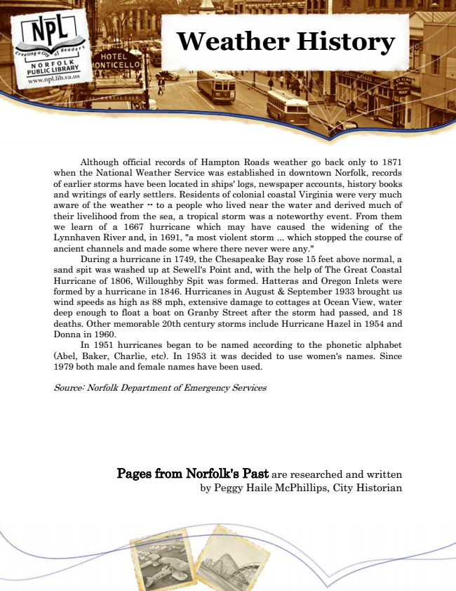

Weather History
Although official records of Hampton Roads weather go back only to 1871 when the National Weather Service was established in downtown Norfolk, records of earlier storms have been located in ships' logs, newspaper accounts, history books and writings of early settlers. Residents of colonial coastal Virginia were very much aware of the weather -- to a people who lived near the water and derived much of their livelihood from the sea, a tropical storm was a noteworthy event. From them we learn of a 1667 hurricane which may have caused the widening of the Lynnhaven River and, in 1691, "a most violent storm ... which stopped the course of ancient channels and made some where there never were any."
During a hurricane in 1749, the Chesapeake Bay rose 15 feet above normal, a sand spit was washed up at Sewell's Point and, with the help of The Great Coastal Hurricane of 1806, Willoughby Spit was formed. Hatteras and Oregon Inlets were formed by a hurricane in 1846. Hurricanes in August & September 1933 brought us wind speeds as high as 88 mph, extensive damage to cottages at Ocean View, water deep enough to float a boat on Granby Street after the storm had passed, and 18 deaths. Other memorable 20th century storms include Hurricane Hazel in 1954 and Donna in 1960.
In 1951 hurricanes began to be named according to the phonetic alphabet (Abel, Baker, Charlie, etc). In 1953 it was decided to use women's names. Since 1979 both male and female names have been used.
Source: Norfolk Department of Emergency Services
Pages from Norfolk's Past are researched and written by Peggy Haile McPhillips, City Historian